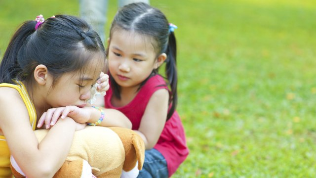

CERITAKAN PENDAPATMU
Target: Kalimat Kompleks & Pendapat
Bintang Prestasi:
0
/ 4

🔊 "Menurutmu, apa yang harus dilakukan jika melihat teman yang sedih?"
🔊 Dengar Pertanyaan
✅ Anak Berani Berpendapat
Situasi Lain ➡️
Kembali
🚀
Luar Biasa!
Anak hebat sudah bisa mengungkapkan pikirannya dengan kalimat yang lengkap.
Lanjutkan